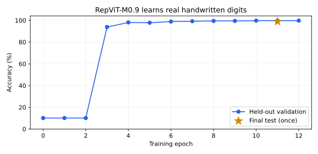

RepViT¶
RepViT is based on the "RepViT: Revisiting Mobile CNN From ViT Perspective" paper and its official implementation.
Architecture overview¶
RepViT adapts mobile CNN blocks using design choices associated with efficient vision transformers. Each block separates spatial token mixing from channel mixing, uses squeeze-excitation selectively, and can fuse its training-time depthwise branches for deployment.
Think of the training block as three paths that look at the same image. Fusion adds their fixed weights into one path. The output stays the same within normal floating-point error, and the device has fewer operations to run.
Train or fine-tune Call eval(), then fuse Run the model
3 x 3 depthwise convolution ─┐
1 x 1 depthwise convolution ─┼─ add + batch norm ───────────► one 3 x 3 convolution
unchanged input ────────────┘
Call model.eval() and then model.reparametrize() before exporting or
benchmarking the deployment form. Conversion preserves evaluation mode, removes
all batch-normalization layers, and can be called repeatedly. Calling it while
the model or a batch-normalization layer is in training mode raises ValueError.
Paper evidence¶
These ImageNet-1K results are teacher-distilled scores reported by the authors, not Holocron benchmark results.
| Model | Parameters | MACs | Top-1, 300 epochs | Top-1, 450 epochs |
|---|---|---|---|---|
| RepViT-M0.9 | 5.1M | 0.8G | 78.7% | 79.1% |
| RepViT-M1.0 | 6.8M | 1.1G | 80.0% | 80.3% |
| RepViT-M1.1 | 8.2M | 1.3G | 80.7% | 81.2% |
Both columns use distillation and 224 x 224 inputs. More training explains the different scores. The local checks below do not reproduce these accuracy scores.
Use the authors' checkpoint¶
Download the authors' M0.9 450-epoch checkpoint.
Its SHA-256 is b76537a20b8c47ef40c1b884bd88f4f3cae498b90f35c61d32da44c16c221443.
Load the unfused checkpoint before fusion:
import torch
from holocron.models import repvit_m0_9
state = torch.load("repvit_m0_9_distill_450e.pth", map_location="cpu", weights_only=True)["model"]
model = repvit_m0_9(num_classes=1000)
model.load_official_state_dict(state)
model.eval()
torch.save(model.state_dict(), "repvit-m0.9-imagenet-imported.pth")
The import maps the authors' flat block names to Holocron's stages. It checks keys and shapes before it copies weights. The distilled checkpoint has two classifier heads. The import combines their evaluation logits into one head, including each head's batch-normalization weights. This is more than an average of the raw linear weights.
For a new task, keep a new classifier and import only the backbone:
model = repvit_m0_9(num_classes=10)
model.load_official_state_dict(state, include_head=False)
model.train()
This supports ordinary fine-tuning. It does not recreate the authors' two-head
distillation loss. pretrained=True still has no default Holocron checkpoint;
use the explicit import above.
The real M0.9 checkpoint was compared with the authors' unchanged model code at
commit 298f42075eda5d2e6102559fad260c970769d34e, using timm 0.6.13. On two seeded
224 x 224 random inputs, the maximum logit error was 3.70e-6 before fusion and
8.52e-6 after fusion. Both passed rtol=1e-4, atol=1e-5 in FP32. This checks
weight and output equivalence; it does not measure ImageNet accuracy. The record
is in repvit-official-import.json.
Short training run on real digits¶
Run this command from the repository root:
The script downloads the 1,797 handwritten digits packaged with scikit-learn. The source is pinned to version 1.7.2 and checked with SHA-256. It needs no scikit-learn install. It changes the 8 x 8 gray images to 32 x 32 RGB inputs, then trains all 4,722,410 parameters of M0.9 from random weights.
| Item | Setting |
|---|---|
| Split | 1,074 training / 355 validation / 368 test images |
| Split seed | 42; each class is split separately; no shared examples |
| Training | 12 fixed epochs; batch 64; FP32; AdamW; initial learning rate 1e-3 |
| Schedule | Cosine decay to 1e-4; no data augmentation |
| Select weights | Lowest validation loss; epoch 11 in this run |
| Test | Evaluate once, after weight selection |

| Measurement | Result |
|---|---|
| Initial validation accuracy | 10.14% |
| Selected validation accuracy | 99.72% (354 / 355) |
| Final test accuracy | 98.91% (364 / 368) |
| Final test loss | 0.05134 |
| Training time | 77.16 seconds |
This run used an Intel Xeon Platinum 8370C, two CPU threads, Python 3.11.16, and PyTorch
2.13.0. Backbone weights changed during training. The saved
run record
contains each epoch, split hashes, class counts, settings, and the checkpoint
hash. The script saves the best weights in checkpoints/repvit-digits.pth.
This is a check that the full model learns and generalizes to separate examples. The small digit set is easier than ImageNet. The split is by image, not by writer. Its accuracy is not an ImageNet or Imagenette result.
Check fusion speed¶
Use the imported 1,000-class checkpoint from the example above:
python references/classification/benchmark_repvit.py \
--checkpoint repvit-m0.9-imagenet-imported.pth \
--num-classes 1000 --sizes 224 --threads 2
The script uses the same weights and input for both model forms. It checks output agreement, warms up each form 20 times, then measures 100 CPU forwards per form. It alternates the order of each pair to reduce drift from the shared host. It reports median and 95th-percentile latency. These times exclude image loading, preprocessing, and data transfer. They are local microbenchmarks on a shared host, not the paper's iPhone timings. See the saved measurement record.
| Form | Parameters | Median latency | 95th-percentile latency |
|---|---|---|---|
| Before fusion | 5,103,560 | 40.75 ms | 51.65 ms |
| After fusion | 5,067,056 | 29.89 ms | 38.71 ms |
These measurements use the imported ImageNet checkpoint, a 1 x 3 x 224 x 224
input, FP32, and two Intel Xeon Platinum 8370C CPU threads. The maximum logit
difference for that input was 9.54e-6. Fusion removed all batch-normalization
layers. Local timing can change with host load.
To check the digit-trained model at its own input size, run
python references/classification/benchmark_repvit.py --sizes 32.
Controlled Holocron benchmark¶
The Holocron comparison trains from scratch on Imagenette without a teacher:
176px training crops, 232px resize and 224px validation crops, 20 epochs,
effective batch size 32, AMP, AdamP at 1e-3, OneCycle, Mixup 0.2, and label
smoothing 0.1. MobileOne-S2 uses the identical command as the baseline.
CUDA measurements remain a separate acceptance gate for issue #499; they are not inferred from local CPU or MPS checks.
| Model | Parameters before/after fusion | MACs | Top-1 | Top-5 | Status |
|---|---|---|---|---|---|
| RepViT-M0.9 | 4,722,410 / 4,685,906 | Pending | Pending | Pending | CUDA run required |
| RepViT-M1.0 | 6,408,390 / 6,365,802 | Pending | Pending | Pending | CUDA run required |
| RepViT-M1.1 | 7,781,018 / 7,736,442 | Pending | Pending | Pending | CUDA run required |
| MobileOne-S2 | Pending rerun | Pending | Pending | Pending | CUDA run required |
These parameter counts use Imagenette's 10 classes. The paper's counts use an ImageNet-1K classifier with 1,000 classes.
Model builders¶
All builders rely on RepViT and accept a custom
class count through num_classes.
Bases: Sequential
Implements RepViT as described in "RepViT: Revisiting Mobile CNN From ViT Perspective".
| PARAMETER | DESCRIPTION |
|---|---|
channels
|
number of output channels in each stage |
num_blocks
|
number of blocks in each stage |
num_classes
|
number of output classes
TYPE:
|
in_channels
|
number of input channels
TYPE:
|
Source code in holocron/models/classification/repvit.py
Import an unfused checkpoint from the authors' RepViT implementation.
Pass the checkpoint's model entry, loaded with weights_only=True.
Distilled checkpoints have two classifiers. Their evaluation outputs are
averaged into one classifier here. This preserves evaluation predictions,
but does not reproduce the authors' two-head distillation training recipe.
Set include_head=False to keep a new classifier for a different task.
| PARAMETER | DESCRIPTION |
|---|---|
state_dict
|
unfused state dictionary from |
include_head
|
whether to import the ImageNet classifier as well as the backbone
TYPE:
|
| RAISES | DESCRIPTION |
|---|---|
ValueError
|
if the model is fused or the checkpoint keys or shapes do not match |
Source code in holocron/models/classification/repvit.py
Fuse training-time branches and batch-normalization layers in place for deployment.
Call eval() before conversion. Repeated calls leave the deployment model unchanged.
| RAISES | DESCRIPTION |
|---|---|
ValueError
|
if the model or any batch-normalization layer is in training mode |
Source code in holocron/models/classification/repvit.py
repvit_m0_9(pretrained: bool = False, checkpoint: Checkpoint | None = None, progress: bool = True, **kwargs: Any) -> RepViT
RepViT-M0.9 model.
| PARAMETER | DESCRIPTION |
|---|---|
pretrained
|
If True, loads the default checkpoint when one is available
TYPE:
|
checkpoint
|
If specified, sets the model parameters to the checkpoint values
TYPE:
|
progress
|
If True, displays a download progress bar
TYPE:
|
kwargs
|
keyword arguments of
TYPE:
|
| RETURNS | DESCRIPTION |
|---|---|
RepViT
|
A RepViT-M0.9 model |
Source code in holocron/models/classification/repvit.py
repvit_m1_0(pretrained: bool = False, checkpoint: Checkpoint | None = None, progress: bool = True, **kwargs: Any) -> RepViT
RepViT-M1.0 model.
| PARAMETER | DESCRIPTION |
|---|---|
pretrained
|
If True, loads the default checkpoint when one is available
TYPE:
|
checkpoint
|
If specified, sets the model parameters to the checkpoint values
TYPE:
|
progress
|
If True, displays a download progress bar
TYPE:
|
kwargs
|
keyword arguments of
TYPE:
|
| RETURNS | DESCRIPTION |
|---|---|
RepViT
|
A RepViT-M1.0 model |
Source code in holocron/models/classification/repvit.py
repvit_m1_1(pretrained: bool = False, checkpoint: Checkpoint | None = None, progress: bool = True, **kwargs: Any) -> RepViT
RepViT-M1.1 model.
| PARAMETER | DESCRIPTION |
|---|---|
pretrained
|
If True, loads the default checkpoint when one is available
TYPE:
|
checkpoint
|
If specified, sets the model parameters to the checkpoint values
TYPE:
|
progress
|
If True, displays a download progress bar
TYPE:
|
kwargs
|
keyword arguments of
TYPE:
|
| RETURNS | DESCRIPTION |
|---|---|
RepViT
|
A RepViT-M1.1 model |